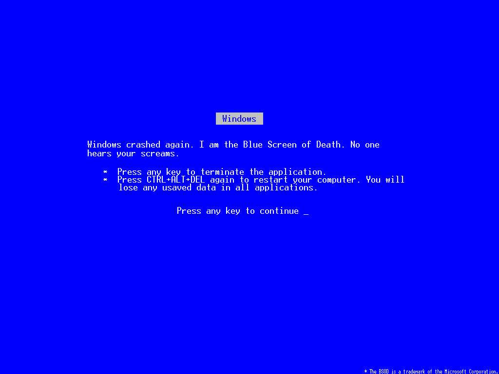

<!doctype html>
<html lang="en">

  <head>
    <meta charset="utf-8">

    <title>reveal.js - Test Markdown</title>

    <link rel="stylesheet" href="css/reveal.min.css">
    <link rel="stylesheet" href="css/theme/default.css" id="theme">
    <!-- <link rel="stylesheet" href="css/print/pdf.css"> -->
  </head>

  <body style="overflow: auto;">

    <div class="reveal" >

      <div class="slides">

        <!-- <section data-markdown="example.md" data-separator="^\n\n\n" data-vertical="^\n\n"></section> -->

        <!-- Slides are separated by newline + three dashes + newline, vertical slides identical but two dashes -->
        <!-- <section data-markdown="README.md" data-separator="^\n\n\n" data-vertical="^\n\n" data-notes="^Note:" data-charset="iso-8859-15"></section> -->
        <section data-markdown data-separator="^\n---\n$" data-vertical="^\n--\n$">
          <script type="text/template">
            # Building a Distributed System in Node, quick!

            by Matt Walters


            ---

            ## defined:

                dis·trib·ut·ed sys·tem
                noun
                plural noun: distributed systems
                1. a number of independent computers linked by a network.


            --

            ### a little more:

                A distributed system consists of a collection of autonomous computers 
                linked by a computer network and equipped with distributed system software. 
                This software enables computers to coordinate their activities and to share 
                the resources of the system hardware, software, and data.

            --

            ### many examples

              - job queue - provides a queued store of work from which applications can operate
              - message broker - routes messages between applications
              - peer to peer - decentralized nodes act as both clients and servers


            --

            ### in the real world

              - database clustering
              - file sharing networks (bittorrent)
              - Amazon, Facebook, Twitter - everybody big


              \* distributed systems are key to scaling computing and many businesses

            ---

            ## </img>

            - Robust messaging for applications
            - Easy to use
            - Runs on all major operating systems
            - Supports a huge number of developer platforms
            - Open source and commercially supported


            --

            ## easily installed

            - brew install rabbitmq // mac
            - sudo apt-get install rabbitmq-server // ubuntu
            - yum install rabbitmq-server-3.1.5-1.noarch.rpm // centos


            --

              Direct send

                

              Round Robin / Work Queues

                

              Pub Sub

                

              Topic Routing

                

              \* & more


            ---

            </img>

                  var http = require('http');
                  http.createServer(function (req, res) {
                    res.writeHead(200, {'Content-Type': 'text/plain'});
                    res.end('Hello World\n');
                  }).listen(1337, '127.0.0.1');
                  console.log('Server running at http://127.0.0.1:1337/');


            --

            </img>


            --

            ## supported by everybody

              - Joyent
              - Amazon
              - Heroku
              - Azure <--- Microsoft!!!*

              \* Microsoft actually donates a human resource to the node-core team
              to ensure it runs well on Windows and Azure


            --

            # download and go!

              http://nodejs.org/download/


            ---

            # servicebus

                $ npm info servicebus
                  npm http GET https://registry.npmjs.org/servicebus
                  npm http 304 https://registry.npmjs.org/servicebus

                  { name: 'servicebus',
                    description: 'Simple service bus for sending events between processes using amqp.',
                    'dist-tags': { latest: '0.2.0' },
                    versions:
                     [ '0.0.1',
                       '0.0.2',


            --

            ## Sending and Receiving

              sender:
                
                var bus = require('servicebus').bus();
                bus.send('my.event', { my: 'event' });

              listener:
                
                var bus = require('servicebus').bus();
                bus.listen('my.event', function (event) {
                  console.log(event);
                });


            --

            ## Round-Robin Load Distribution

              lots of these guys:
                
                var bus = require('servicebus').bus();
                bus.listen('my.event', function (event) {
                  console.log(event);
                });

              one of these guys:
                
                var bus = require('servicebus').bus();
                bus.send('my.event', { my: 'event' });


            --

            ## Message Acknowledgement

                bus.listen('my.event', { ack: true }, function (event, handle) {
                  handle.acknowledge(); // acknowledge a message
                  handle.ack(); // short hand is also available
                  handle.reject(); // reject a message
                });

              reject sends message back to the queue (or to an error queue) & ack pops it off the queue, signaling complete


            --

            Direct send - scaleable, reliable messaging

            

            
            ---

            ## Publish / Subscribe

              subscriber (every subscriber running will receive a message):
                
                var bus = require('servicebus').bus();
                bus.subscribe('my.event', function (event) {
                  console.log(event);
                });

              publisher:
                
                var bus = require('servicebus').bus();
                bus.publish('my.event', { my: 'event' });


            --

          Fanout - scaleable, fire and forget

           

            ---

            ## Middleware

            ```
              var busUrl = process.env.RABBITMQ_URL

              var bus = require('../').bus({ url: busUrl });

              bus.use(bus.package());
              bus.use(bus.correlate());
              bus.use(bus.log());
              bus.use(bus.retry());

              module.exports.bus = bus;
            ```

            --

            middleware expose one or two functions:

                var debug = require('debug'),
                    util = require('util');

                module.exports = function (label) {
                  label = label || 'servicebus';

                  var log = debug(label);

                  function logIncoming (queueName, message, next) {
                    log('received ' + util.inspect(message));
                    next(null, queueName, message);
                  }

                  function logOutgoing (message, headers, deliveryInfo, messageHandle, o
                    log('sending ' + util.inspect(message));
                    next(null, message, headers, deliveryInfo, messageHandle, options);
                  }

                  return {
                    handleIncoming: logIncoming, // middleware to log incoming messages
                    handleOutgoing: logOutgoing // middleware to log outgoing messages
                  };
                } 


            --

            ### Correlate

                {
                  cid: 'dbe4f04b-b23c-42c2-8bed-e851c75073be',
                  ...
                }

            --

            ### Log

                ...
                servicebus received { items: [ { name: 'asdf', price: '4' }, { name: 'as
                 id: '4143ac76-822d-49b8-8f1f-b9cd6f2f95f8',
                 created: 'Mon, 23 Sep 2013 22:06:52 GMT' } }
                ...

            --

            ### Package

            ```
              // bus.publish('my:event', { my: 'event' });
              {
                my: 'event'
              };
            ```
            becomes
            ```
              {
                data: {
                  my: 'event'
                }
                , datetime: 'Wed, 04 Sep 2013 19:31:11 GMT'
                , type: 'my:event'
              };
            ```


            --

            ### Retry

            Throws message back to queue 

            ```
            bus.listen('my.event', { ack: true }, function (event, handle) {
              doSomething(function (err, result) {
                if (err) {
                  return handle.reject(); // reject a message
                }
                ...
              })
            });
            ```
            (or to error queue if > max-retries)


            --

            middleware - for cross-cutting, architectural sanity

            </img>


            ---

            # Demo!

            </img>
            </script>
        </section>

      </div>

    </div>

    <script src="lib/js/head.min.js"></script>
    <script src="js/reveal.js"></script>
    <script src="plugin/markdown/marked.js"></script>
    <script src="plugin/markdown/markdown.js"></script>
    <script src="presentation.js"></script>

  </body>
</html>